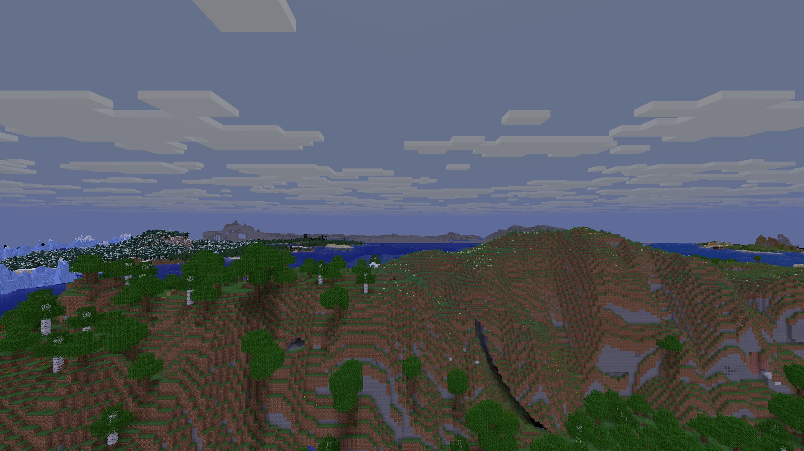
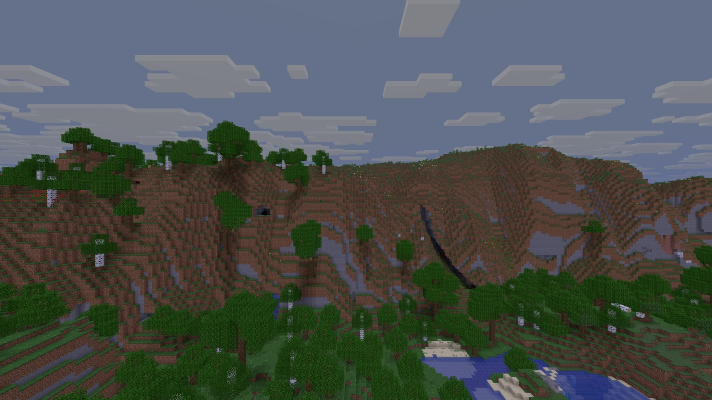
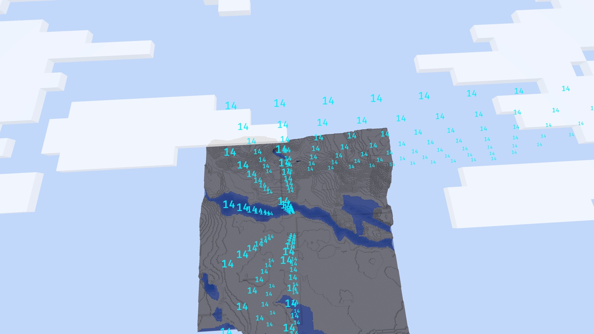
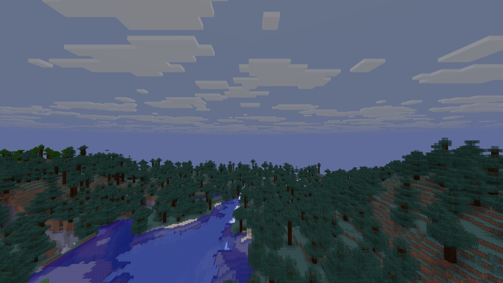

Turn the tick on its side
Almost every Minecraft server ticks the world as objects calling objects, on one thread. Bevy ECS ticks the same world as tables. Step through one tick both ways.
One loop, nested
The world ticks each chunk, each chunk ticks each entity, and a zombie on a pressure plate runs redstone from inside its own tick. Networking already has threads; this loop does not.
world tick
chunk [12, -4]
zombie tick
goals: find a player, path to it
move: gravity, collide
steps on a pressure plate → block update
redstone: dust → repeater → door
falling sand tick → lands → block update
chunk [13, -4]
water spreads → block update → …
scheduled ticks, block events| Entity | Position | Velocity | Health | Goals | Burning | Block |
|---|---|---|---|---|---|---|
| Steve | 12 64 −3 | 0 0 0 | 20 | |||
| Zombie | 18 64 2 | 0.1 0 0 | 20 | chase Steve | ||
| Zombie | 30 63 −8 | 0 0 0 | 14 | wander | yes | |
| Skeleton | 25 64 9 | 0 0 0 | 20 | shoot Steve | ||
| Falling sand | 20 70 4 | 0 −0.5 0 | sand | |||
| Arrow | 23 65 6 | −0.8 0.1 −1.1 |
reads writes
Edge: every connection, for the whole session
Node A Node B
- Simulation threads
- 1
- Who can touch what
- anything, from anywhere
Why every server is one loop
The Java server is objects that tick themselves, and servers since copy that shape: a port goes class by class and keeps working at every step, while tables mean rewriting every mechanic around its data. So forks move one job at a time off the loop, Folia cuts the world into regions that are each still a nested loop, and Rust ports put the same objects behind Arc<Mutex<…>>.
A new Rust server is announced about twice a year; there is a counter for it, and a tracker that still says “not yet”. mc.rs started with the tables.
Even vanilla is a module
Every crate is a brick, and a build takes only the bricks it needs. A minigame never pulls in world generation, saves or light; a survival server adds the vanilla row on the same bricks. A blank cell is a layer that build does not pay for.
The bricks share one set of types: a block state read by anvil is the same value worldgen places and mesh draws.
cargo tree -p mcrs_minecraft_engine_server holds no anvil, worldgen or light_engine. Below the engine nothing needs Bevy, and only the network needs tokio. A bot is the client without its rendering row.
Checked by vanilla’s own tests
Each mechanic lands as a vanilla module with a written specification, and a behaviour test in vanilla’s format decides whether it matches. Expected results come from vanilla’s test server. The same test must pass on one thread, on many, and with its chunks moved to another node partway through.
Protocol, saves, movement and world generation match tick for tick. Block simulation gives vanilla’s result; the order inside a tick is one replaceable policy, and the vanilla policy gives the exact order. Specifications are written from the game’s data and behaviour; the code is written from the specifications.
exactsame result
Blocks
- Neighbour updates and block ticks#183
- Redstone#190
- Pistons#195
- Water and lava#196
- Hoppers and dispensers#200
- Crops, trees and fire#203
World
- World generationin place
- Player movementin place
- Saving the world#169
- Nether and End portals#143
Life
- Natural spawning#225
- Pathfinding#231
- Animals, pets and mounts#233
- Villages and trading#238
- Hostile mobs and raids#242
- The ender dragon#248
Items
- Crafting and smelting#208
- Enchanting#213
- Combat and durability#121
- Inventory#521
Built for the newest Minecraft
One version at a time, and always the newest snapshot.
One command moves mc.rs to the next one. It takes the version, the reports and the block and item definitions from the game itself, and the tests show what changed. There are no datafixers and no old layouts to carry.
The data pack is read from the game at run time, so a pack that adds a biome, a dimension or a clock is picked up without a rebuild.
cargo run -p mcrs_minecraft_update -- <version id>- The version file
- from the game jar
- The client jar descriptor
- replaced
- The generated reports
- replaced
- Block definitions
- replaced
- Item definitions
- replaced
- Fixtures captured from the game
- regenerated
- Rust code
- untouched; the tests say what to port
And a client, to look at it
The same crates draw the world: terrain, sky, clouds and coloured light, natively and in the browser. Rendering is one part of the client, so a bot is the client with rendering off.




Run a server tonight
Nightly Rust, picked for you by rust-toolchain.toml. Start on a new world or on an existing Java Edition save, then join with the vanilla client of the same snapshot.
cargo run --release -- "<world folder>"